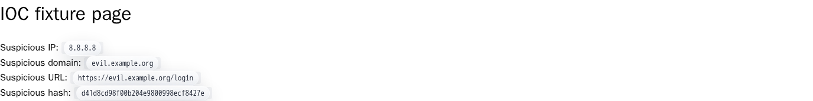
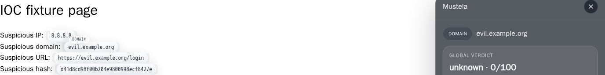
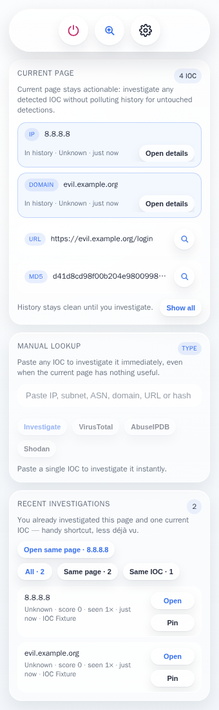

Mustela detects and highlights indicators of compromise — IPs, domains, URLs, hashes — directly on the page you are working on, and turns every one of them into a one-click investigation.
mustela --scan current_page [+] 4 IPv4 [+] 2 domains [+] 1 SHA256 → 185.220.101.34 VT 23/94 AbuseIPDB 100% Shodan: 3 ports [✓] verdicts aggregated · cached locally · zero telemetry
SOC workflows are full of repetitive pivots: copy an IOC, open a new tab, paste, correlate by hand. Mustela keeps the whole loop inside the browser.
IPv4, subnets, ASN, domains, URLs, MD5 / SHA1 / SHA256 — detected and highlighted on any page without breaking it.
VirusTotal, AbuseIPDB and Shodan results consolidated into a single analyst-friendly view, one click away.
Jump to the provider's own site only when you need deeper context — never as a default reflex.
Paste any IOC into the popup, or select text on a page and look it up from the right-click menu.
Recent investigations, cached verdicts and analyst notes — everything stays in your browser.
Highlighting in the way? Disable Mustela on a specific page with one switch.
Open a SIEM, a ticket, a CTI report or an email — Mustela does the rest.
Mustela scans the page and highlights every indicator it finds, without altering the host page's behavior.

Click any highlight to open the in-page investigation panel with consolidated provider verdicts, notes and JSON export.

The popup summarizes the current page, offers manual lookup, and keeps your recent investigations at hand.

No backend, no telemetry, no analytics, no account system. Mustela is honest about its trade-offs.
chrome.storage.local.Works out of the box for detection and pivots. Add free API keys for enriched verdicts.
# build from source
git clone https://github.com/ArmorIntel/mustela.git
cd mustela
npm install && npm run build
chrome://extensions and enable Developer modedist/chrome